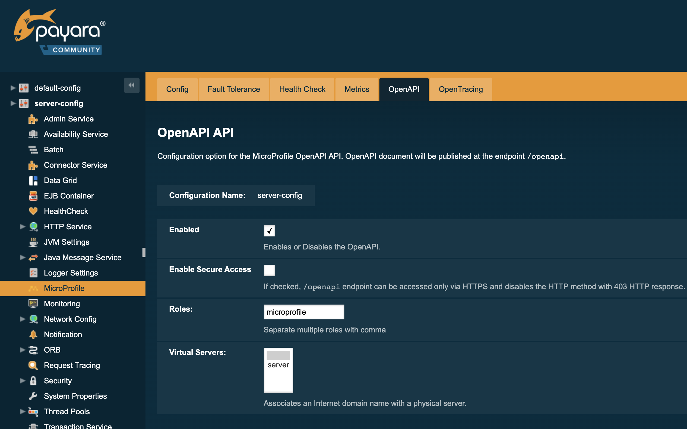

Eclipse MicroProfile OpenAPI API
Since 4.1.2.182; 5.182
Provided version of the API: MicroProfile OpenAPI 2.0
Background
The OpenAPI API was designed to provide a standard interface for documenting and exposing RESTful APIs. The MicroProfile OpenAPI API provides a set of interfaces and annotations to allow application developers to produce an OpenAPI document from their JAX-RS applications. The OpenAPI API is somewhat similar to the Swagger API, so many concepts in the API will be familiar.
For a full overview of the API, review the documentation for the appropriate release.
MicroProfile OpenAPI 1.0 was released in MicroProfile 1.3.
| Version 2.0 of the OpenAPI specification does not define the behaviour of implementations where multiple applications are deployed to the same container. This limitation will be addressed in a later version of the OpenAPI specification. |
REST Endpoint
MicroProfile OpenAPI specifies that an OpenAPI document should be published at the endpoint /openapi documenting a deployed application. For both Payara Server Community and Payara Micro Community, this means that the endpoint can be found on any HTTP port (e.g. 8080) after deploying an application. The OpenAPI document displayed will always be for the most recently deployed application, except in the special case of disabling the service (see configuration).
By default the OpenAPI document is displayed in YAML format, although this can be changed to JSON by changing the Accept header of the request. Alternatively if using a browser, this can also be done by specifying a format query parameter. For example, http://localhost:8080/openapi?format=json. The valid values are json and yaml.
OpenAPI Configuration Sources
MicroProfile OpenAPI specifies several ways of configuring the data in the produced OpenAPI document. These are all provided by the OpenAPI API artifact:
<dependency>
<groupId>org.eclipse.microprofile.openapi</groupId>
<artifactId>microprofile-openapi-api</artifactId>
<version>1.0</version>
<scope>provided</scope>
</dependency>Config Properties
The OpenAPI can be configured through the Config API. For example, these configuration properties can be put in the microprofile-config.properties.
| Config key | Value description |
|---|---|
|
Configuration property to specify the fully qualified name of the OASModelReader implementation. |
|
Configuration property to specify the fully qualified name of the OASFilter implementation. |
|
Configuration property to disable annotation scanning. Default value is |
|
Configuration property to specify the list of packages to scan. For example,
|
|
Configuration property to specify the list of classes to scan. For example,
|
|
Configuration property to specify the list of packages to exclude from scans. For example,
|
|
Configuration property to specify the list of classes to exclude from scans. For example,
|
|
Configuration property to scan the packaged jar files inside the WAR (WEB-INF\lib). Default value is |
|
Configuration property to specify the list of global servers that provide connectivity information. For example,
|
|
Prefix of the configuration property to specify an alternative list of servers to service all operations in a path. For example,
|
|
Prefix of the configuration property to specify an alternative list of servers to service an operation.
Operations that want to specify an alternative list of servers must define an |
|
Prefix of the configuration property to specify an alternative list of servers to service an operation.
Prefix of the configuration property to specify a schema for a specific class, in JSON format. The remainder of the property key must be the fully-qualified class name. The value must be a valid OpenAPI schema object, specified in the JSON format. The use of this property is functionally equivalent to the use of the When a For example, in the case where an application wishes to represent a Java |
OASModelReader
org.eclipse.microprofile.openapi.OASModelReader
The OASModelReader interface can be implemented by an application developer. It must then be declared as an Config API variable in the form:
mp.openapi.model.reader=fish.payara.examples.OASModelReaderImpl
This class will be called at the beginning of the OpenAPI document generation, and will create the initial OpenAPI document.
OASFilter
org.eclipse.microprofile.openapi.OASFilter
The OASFilter interface can be implemented by an application developer. It must then be declared as an Config API variable in the form:
mp.openapi.filter=fish.payara.examples.OASFilterImpl
Each method in the implementation will be called on every appropriate element in the OpenAPI model. For example, the method filterPathItem(PathItem pathItem) will be called for every PathItem in the document.
This class is called last, before the document is published.
Static Document
The MicroProfile OpenAPI supports using a static OpenAPI document to build from. This static file can be placed in either META-INF directory in a WAR file. Most often, this means putting the file in src/main/resources/META-INF.
The following file names are allowed for this file. The file given must also be in the specified format.
| File Format | Allowed File Names |
|---|---|
|
|
|
|
Annotations
The MicroProfile OpenAPI API provides many annotations to use to augment the OpenAPI document. These are detailed in the OpenAPI Specification. These annotations are applied before the OASFilter.
OpenAPI Configuration
OpenAPI can be configured by using Admin Console or Asadmin commands.
Since 5.183
Using the Admin Console
To configure the OpenAPI in the Admin Console, go to Configuration → [instance-configuration (like server-config)] → MicroProfile → OpenAPI:

Using Asadmin Commands
set-openapi-configuration
- Usage
asadmin> set-openapi-configuration
[--enabled=true|false]
[--corsheaders=true|false]
[--securityenabled=true|false]
[--roles=<role-list>]
[--target=<target[default:server]>]
[--virtualservers=<virtualserver-list>]
- Aim
-
Enables or disables the OpenAPI service.
When the OpenAPI service is disabled, the /openapi endpoint will always return a 403 error and any applications deployed during this period will not have an OpenAPI document built. Enabling the service again will not cause a documents to be built for any currently deployed applications.
|
Command Options
| Option | Type | Description | Default | Mandatory |
|---|---|---|---|---|
|
Boolean |
Whether the service should be enabled/disabled. |
true |
No |
|
Boolean |
Whether or not CORS headers (e.g. Since Payara Server 5.192 |
false |
No |
|
Boolean |
Whether or not secure access to the openapi endpoint is enabled. Since Payara Server 5.193 |
false |
No |
|
String |
If defined, the endpoint will be assigned to a list of the role specified as a comma-separated. Since Payara Server 5.193 |
|
No |
|
String |
The target Payara config to apply the change to. |
server-config |
No |
|
String |
If defined, the '/openapi' endpoint will be assigned to the list of virtual servers specified as a comma-separated list of names. Otherwise, the endpoint will be assigned to all virtual servers available. Since Payara Server 4.1.2.184 and 5.184 |
- |
No |
Security Configuration
By default, OpenAPI endpoints binds to root context application which is
default-web-module (docroot) system application and default-web-module
application uses default realm (file) of server. If user application deployed
with the empty context-root then the security configuration of the deployed
application will be shared by OpenAPI endpoints.